«Champions Club»
«Champions Club» — це Клуб для всієї сім’ї, який надає повний комплекс сучасних послуг у сфері здоров’я, краси та відпочинку.
Наші послуги
Тренажерний зал
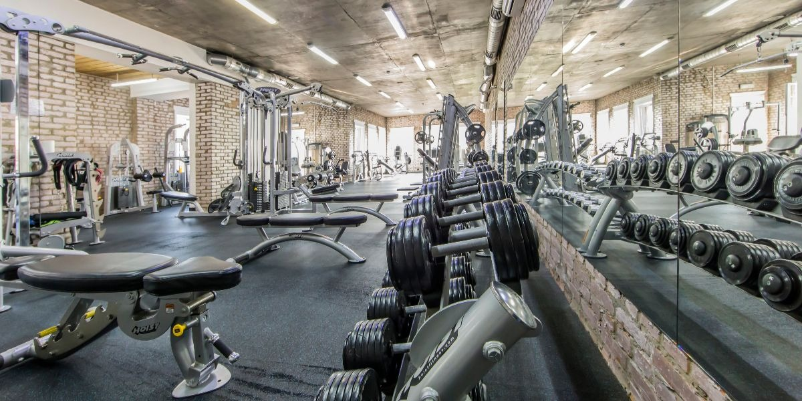Тренажерний зал CHAMPIONS CLUB в Ірпені і Стоянці оснащений за найсучаснішими вимогам та стандартам спорт-індустрії: системи припливно-витяжної вентиляції та кондиціонування, аудиосистема, професійне підлогове покриття, висококласне спортивне обладнання, розраховане на широкий круг користувачів.
Тренажерный зал CHAMPIONS CLUB розділений на дві зони: зона кардіо-тренажерів та силова зона (вільні ваги, силові тренажери з вбудованими та вільними вагами).
Силова зона тренажерного залу
Основу залу становить силове обладнанням преміум-класу відомих американських виробників PRECOR і HOIST. За свою історію ці дві компанії заслужили репутацію виробників професійних силових тренажерів з чудовою якістю. Лінійку комерційного обладнання PRECOR і HOIST можна знайти у всьому світі в фітнес-клубах, громадських центрах, готелях, державних і приватних навчальних закладах, корпоративних фітнес-центрах, держустановах і військових базах. Ці компанії є авторами великої кількості інновацій, які захищені численними патентами і з успіхом впроваджені в серійне виробництво.
Кардіо-зона тренажерного залу
Зону кардіо-тренажерів представляють професійні бігові доріжки, велотренажери та орбітреки (еліптичні тренажери) виробництва компанії PRECOR.
Зручне місце розташування CHAMPIONS CLUB і висококласні тренажери преміум-брендів залучають в наш тренажерний зал не тільки жителів Ірпеня, а й Бучі, Ворзеля, Гостомеля, Стоянки, а також жителів Святошинського району Києва (Академмістечко, Житомирська).
Персональний тренінг
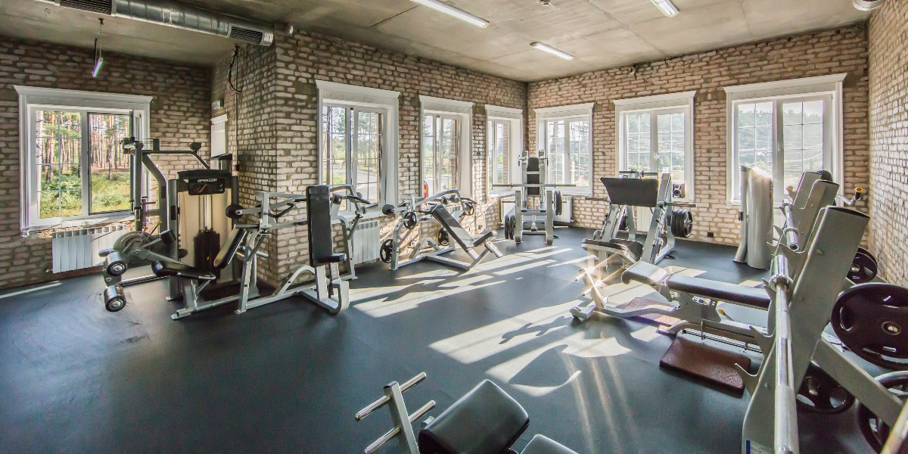Основна мета персонального тренінгу — максимально ефективна віддача від тренувань з урахуванням індивідуальних особливостей того, хто займається. Персональні тренування проводяться в будь-який зручний для Вас час. Також складається програма тренувань, яка максимально відповідає вашому віку і фізичній формі.
Досвідчений інструктор не тільки простежить за правильністю виконання вправ, але і вчасно змінить програму тренувань, завдяки чому ви не будете зупинятися на досягнутому. Більш того, крім навантаження тренер здатний скорегувати і Вашу дієту! Така схема тренування є досить ефективною, адже вона дає людині психологічну підтримку – то, чого їй так не вистачає під час самостійних тренувань.
На користь вибору персонального тренера говорить і той факт, що без особистого інструктора не обходиться жоден професійний спортсмен, тому якщо Ви робите ставку на результат, то найшвидшим і ефективним шляхом його досягнення будуть персональні тренування.
Групові програми
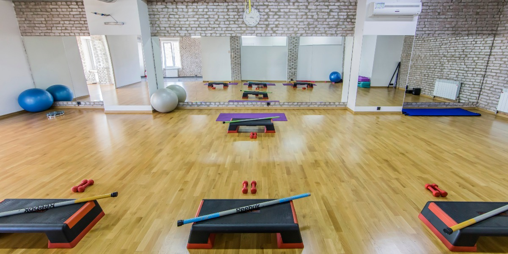Це різноманітні комплекси вправ, які проводяться з вагою власного тіла і додатковим обладнанням (платформи, боді бари, м’ячі, гантелі, TRX-петлі і т.д.), що дозволяють зміцнити м’язовий корсет, поліпшити поставу, розвинути гнучкість і отримати фігуру своєї мрії. Заняття в групі добре мотивує для ефективного тренування на результат і приносить справжню насолоду від тренування в групі однодумців.
Басейн
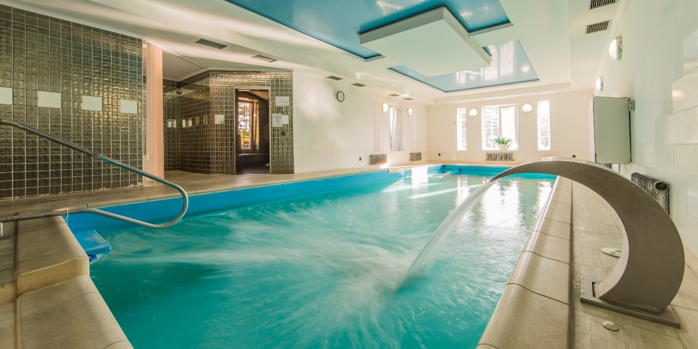Басейн CHAMPIONS CLUB в Ірпені та Стоянці хоча і далекий за своїми розмірами від класичного олімпійського басейну (довжина 10 метрів, ширина 4 м, глибина 1,2 м і 1,6 м), але являє собою гармонічний симбіоз релаксу та занять плаванням: гідромасажні форсунки, водоспад для шийного відділу хребта, а для бажаючих поплавати — система потужного противотока. Все це подарує Вам бадьорість і стане фінальним акордом в завершенні насиченого спортивного візиту до Клубу.
Хамам
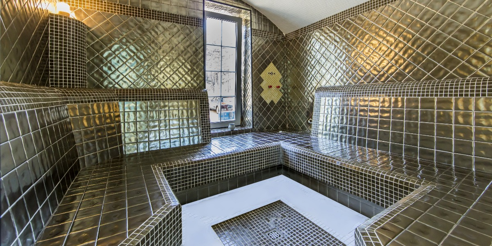Хаммам (хамам) є частиною аквазони «Champions Club», в яку також входить і басейн. Тут у вас буде прекрасна можливість насолодитися м’якою парою при температурі всього + 45-55 ° С і 100% вологості.
Відвідування хамама (турецька баня) сприяє очищенню всього організму, відкриттю пір, знімає втому і стрес, стабілізує систему дихання.
Зручне місце розташування «Champions Club» і унікальна аквазона залучають в наш клуб не тільки жителів Ірпеня, а й Бучі, Ворзеля, Гостомеля, Стоянки, а також жителів Святошинського району Києва (Академмістечко, Житомирська).
Дитячі напрямки: плавання, кікбоксинг
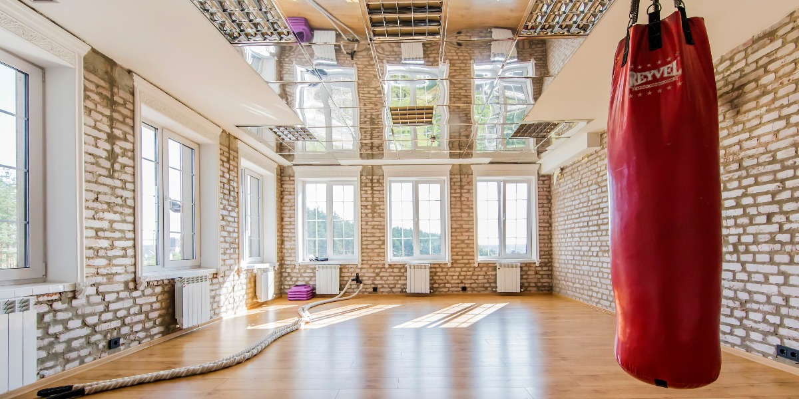Плавання для дітей
Хочемо звернути особливу увагу батьків на дитячі заняття з плавання, які проводить в басейні Клубу досвідчений тренер-педагог.
Симбіоз класичної методики навчання плаванню з сучасними інноваціями навчання дітей і індивідуальний підхід до кожного дають швидкий результат.
Вік вихованців нашого тренера від 3-х років і вище. Заняття проходять в міні-групах 2-3 дитини. Групи формуються виходячи з віку і / або навичок дитини. Також є й індивідуальні заняття, на яких Ваша дитина отримає максимум уваги тренера.
Для «маленьких рибок» заняття проводяться в ігровій формі з використанням додаткового інвентарю та іграшок. На заняттях дозволено присутність батьків малюків.
І не важливо, який вік дитини, що прийшов навчиться плавання, результатом буде перехід на «ти» з водною стихією, відмінний настрій, рівномірний розвиток усіх м’язових груп, поліпшення координації, профілактика викривлень хребта і міцне здоров’я.
Кікбоксинг для дітей
Кікбоксинг — унікальне відгалуження в світі бойових мистецтв, арсенал якого включає в себе елементи більшості відомих єдиноборств — боксу, карате, тхеквондо, тайського боксу, шутбоксингу, сават та ін.
Опис заняття:
- в тренування включені вправи на розвиток гнучкості, підвищення еластичності м’язів і рухливості суглобів, зміцнення зв’язок і сухожиль;
- розвиток фізичних даних (швидкість, сила, витривалість, координація);
- відпрацювання ударів руками і ногами;
- навички самооборони.
В результаті занять у підлітків підвищується психологічна стійкість, зростає самооцінка, з’являється командний дух та лідерські якості.
НАШІ ТРЕНЕРИ
Микола Братущик
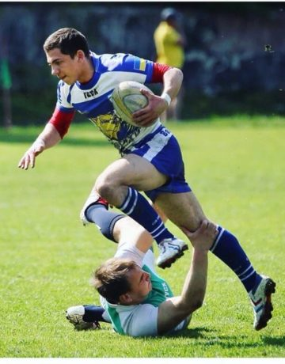Біографія:
Тренер тренажерного залу, тренер – реабілітолог
Освіта:
- Магистрант НПУ ім. Драгоманова, кафедра фіз. виховання і спорту, факультет фіз. терапії, ерготерапії;
- Реабілітація опорно-рухового апарату за методикою Бубновського.
Досягнення:
- 11 років в спорті;
- Чемпіон України з регбі;
- Кандидат у майстри спорту;
- Входив до складу збірної України з регбі U-18 і U-20.
Владислав Болдирєв
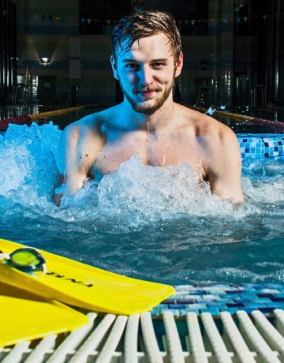Біографія:
Тренер з плавання
- Національний університет фізичного виховання і спорту України, тренерський факультет;
- Майстер спорту України з плавання, чемпіон і призер чемпіонатів міста Києва, України, міжнародних турнірів;
- Виступав за збірну міста Києва, Київської області, резерв збірної України з плавання.
ГАЛЕРЕЯ КЛУБУ
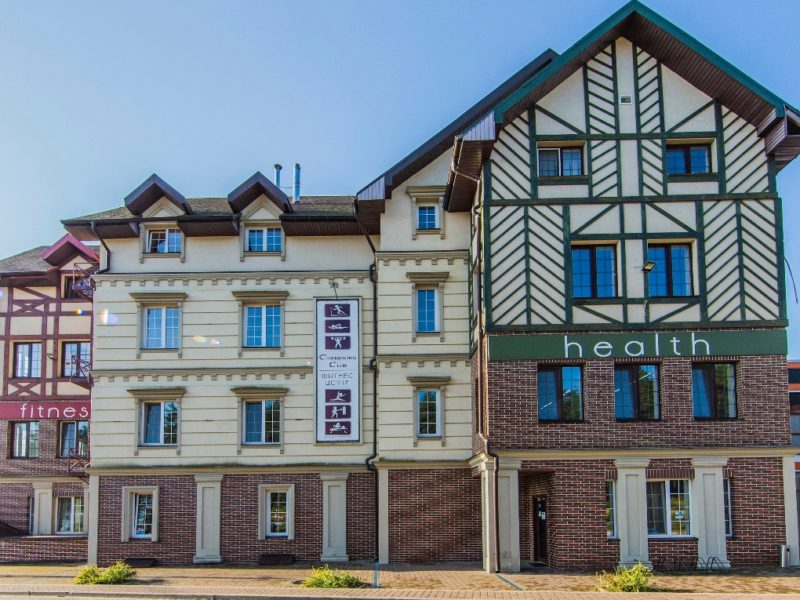 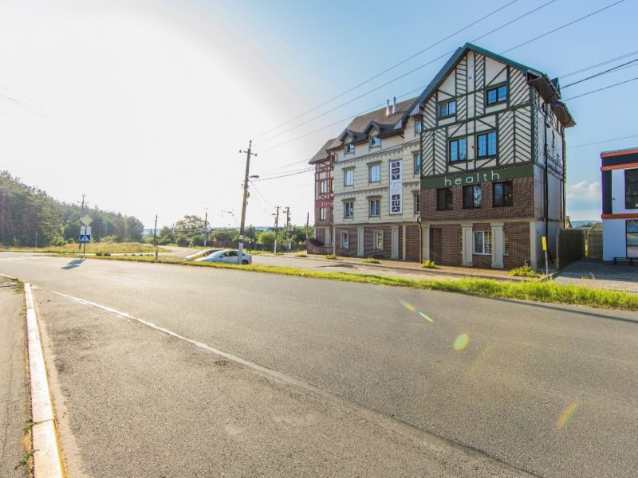 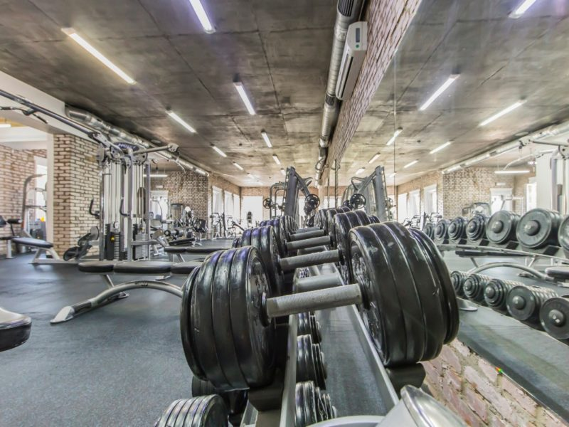 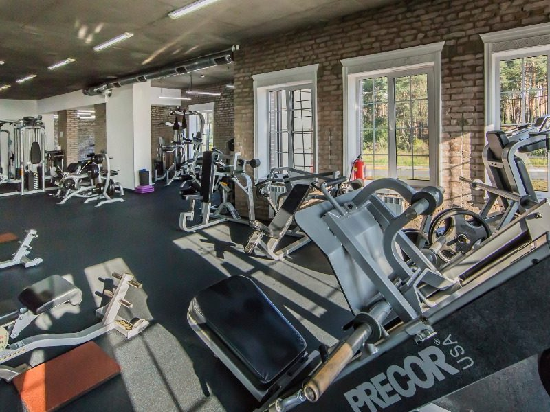 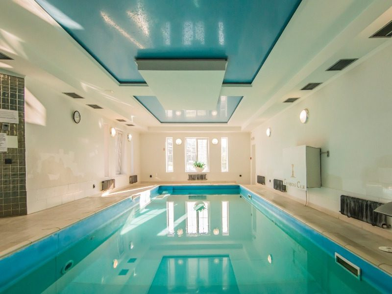 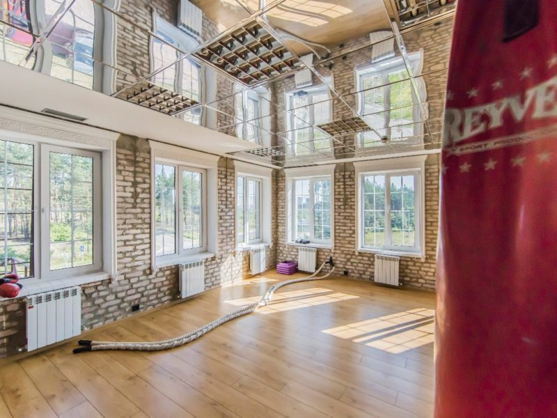Наші контакти
Адреса: м. Ірпінь, вул Незалежності, 23а
Тедефони: +38 067 77-910-17, +38 050 77-910-17
Ел. пошта: champclubinfo@gmail.com